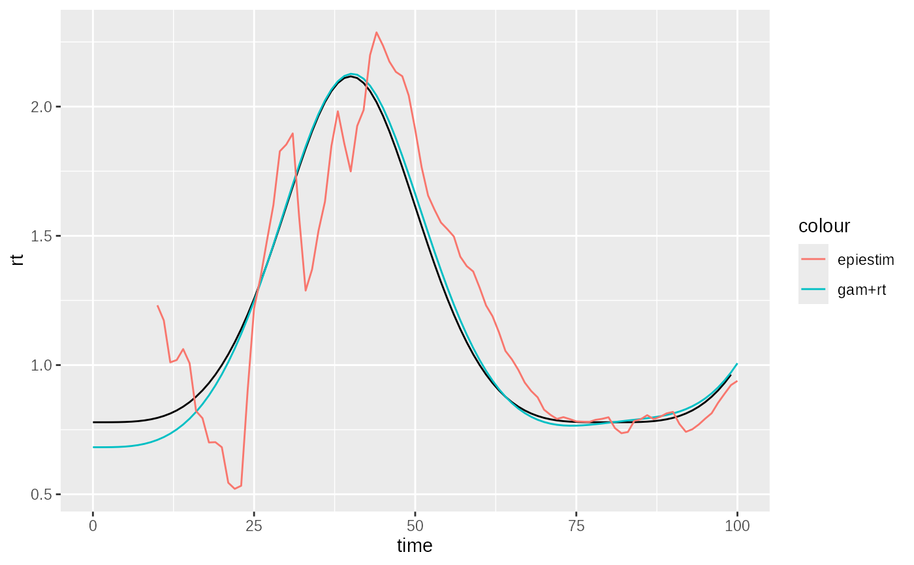

Time series implementation of the Rt from modelled incidence algorithm
Source:R/estimator-rt-incidence.R
rt_incidence_timeseries_implementation.RdThis function estimates the reproduction number for a while time series given log-normally distributed incidence estimates, and a set of infectivity profiles. This version of the algorithm is optimised for running over all of a single time series. The algorithm will not produce Rt estimates until there is at least the
Usage
rt_incidence_timeseries_implementation(
time,
mu,
vcov = NULL,
sigma = NULL,
ip = i_discrete_ip,
tidy = FALSE,
...
)Arguments
- time
a set of time points as a numeric vector. This is a vector of length
k.- mu
a time series of meanlog parameters of a lognormal distribution of modelled incidence. This is a vector of length
k.- vcov
a log scale variance-covariance matrix of predictions. It is optional but if not given and
sigma_tis given then this will be inferred assuming independence between estimates. This should be a matrix with dimensionsk * k- sigma
if
vcovis not given then this must be supplied as the sdlog of the log normal incidence estimate. If this is the case the estimates will be made assuming estimate independence. A vector of lengthk. Checks will be made that determine if there is risk of bias, and this can make this slower than using the full covariance matrix.- ip
a long format infectivity profile dataframe. - a dataframe with columns:
boot (anything + default(1)) - a bootstrap identifier
probability (proportion) - the probability of new event during this period.
tau (integer + complete) - the days since the index event.
Minimally grouped by: boot (and other groupings allowed).
A default value is defined.
- tidy
do you want detailed raw output (
FALSE- default) or summary output with quantiles predicted.- ...
passed onto output formatter if
tidy=TRUE, at the moment onlyapprox = FALSE
Value
a dataframe with k rows with the following columns:
time_Rt: the time point of the Rt estimate (usually
k-1)mean_Rt_star: the mean of the Rt estimate
var_Rt_star: the variance of the Rt estimate
meanlog_Rt_star: log normal parameter for approximate distribution of Rt
sdlog_Rt_star: log normal parameter for approximate distribution of Rt
mu_Rt_mix: a list of vectors of log normal parameters for more exact mixture distribution of Rt
sigma_Rt_mix: a list of vectors of log normal parameters for more exact mixture distribution of Rt
Approximate quantiles can be obtained from e.g. qlnorm(0.5, meanlog_Rt_star, sdlog_Rt_star)
Alternatively if tidy is true the output will be post processed to conform to:
A dataframe containing the following columns:
time (ggoutbreak::time_period + group_unique) - A (usually complete) set of singular observations per unit time as a
time_periodrt.fit (double) - an estimate of the reproduction number
rt.se.fit (positive_double) - the standard error of the reproduction number
rt.0.025 (double) - lower confidence limit of the reproduction number
rt.0.5 (double) - median estimate of the reproduction number
rt.0.975 (double) - upper confidence limit of the reproduction number
Any grouping allowed.
Details
N.B. the description of this algorithm is given here: https://ai4ci.github.io/ggoutbreak/articles/rt-from-incidence.html
Examples
data = ggoutbreak::test_poisson_rt_smooth
ip = ggoutbreak::example_ip()
# first we need a set of incidence estimates
# we fit a poisson model to counts using a GAM:
model = mgcv::gam(count ~ s(time), family = "poisson", data=data)
ip_len = max(ip$tau)
newdata = dplyr::tibble(time = -ip_len:100)
pred = stats::predict(model, newdata, se.fit = TRUE)
# we can get prediction vcov from GAMs fairly easily
Xp = stats::predict(model, newdata, type = "lpmatrix")
pred_vcov = Xp %*% stats::vcov(model) %*% t(Xp)
# Now we estimate rt
rt_est = rt_incidence_timeseries_implementation(
time = newdata$time,
mu = pred$fit,
vcov = pred_vcov,
ip = ip)
# Lets compare epiestim on the same data
withr::with_seed(100, {
epi = EpiEstim::estimate_R(
data$count,
method = "si_from_sample",
si_sample = omega_matrix(ip),
config = EpiEstim::make_config(
method = "si_from_sample",
t_start = 10:100-7,
t_end = 10:100,
n2 = 100)
)
})
ggplot2::ggplot()+
ggplot2::geom_line(
data=data %>% dplyr::filter(time<100),
ggplot2::aes(x=time,y=rt), colour="black")+
ggplot2::geom_line(
data = rt_est, ggplot2::aes(x=time, y=mean_Rt_star, colour="gam+rt"))+
ggplot2::geom_line(
data = epi$R, ggplot2::aes(x=t_end, y=`Mean(R)`, colour="epiestim"))

# mean bias of GAM+rt estimate:
mean(data$rt[seq_along(rt_est$mean_Rt_star)] - rt_est$mean_Rt_star)
#> [1] 0.008394484